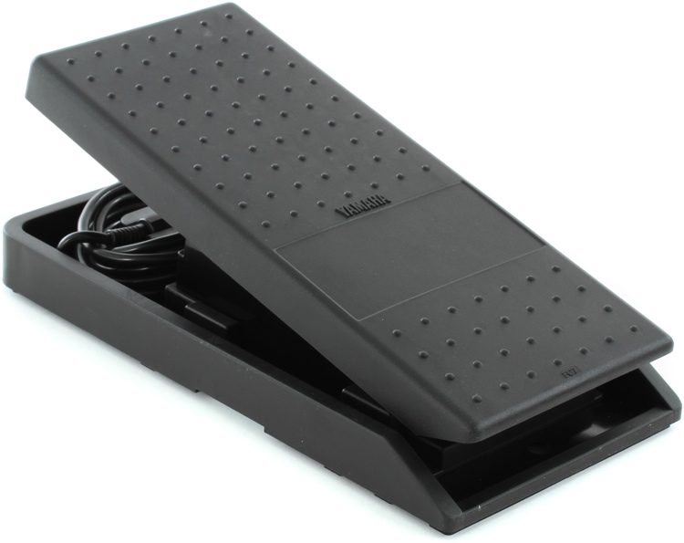
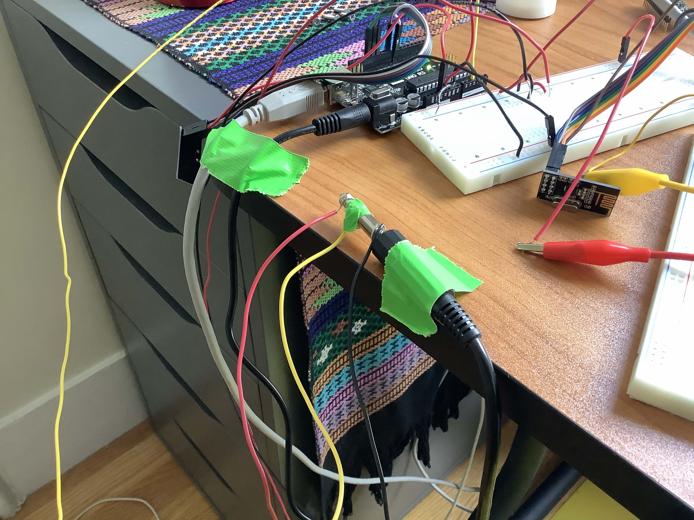
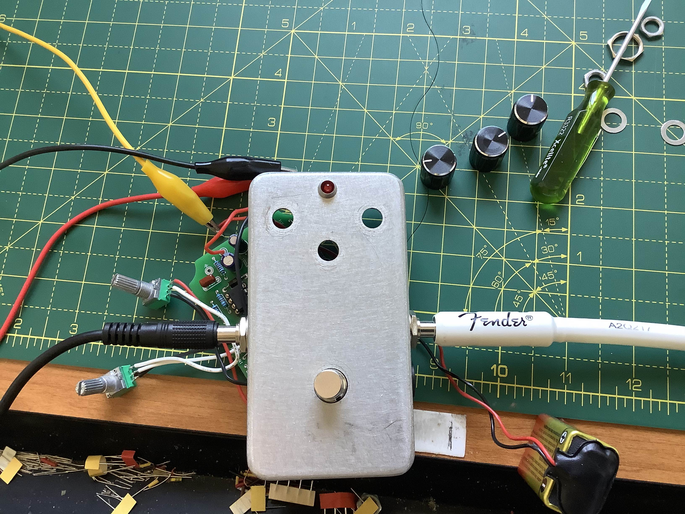

The past couple of weeks have allowed me to start thinking of and working on my final project. Given the limitations imposed by the lockdown and lack of access to the lab, I've decided to focus on building a digital/analog communication system between MIDI input and analog audio gear.
My computer seems to be able to talk to an Arduino UNO and the ESP32. If I pass the Metro as an UNO, that one works as well. For this reason, I will be working exclusively with those three boards for the time being.
My first pleasant discovery of the week was realizing that a MIDI expression pedal is essentially a potentiometer. This is the one I will be using:

All I had to do then was to locate +, -, and ground and to hook it up to the UNO taking tip, ring, and sleeve, like this:

My idea was then to use the signal from the MIDI pedal to "move" one of the knobs on a fuzz pedal I built about a year ago (eventually I want to do this with other guitar pedals I own, but since those actually cost $ and I don't want to break them, I'm using the fuzz for tests).
The fuzz pedal has three knobs: 1)volume, 2)tone, and 3)fuzz. I'll be "moving" the fuzz.

To communicate between the input and output, I'm using radio. After considering BLE and WiFi, I decided to go with radio because a) communication seems faster and more stable than BLE and b) because I only want to change the pedal's parameters; not send audio. I want control input and audio output to be kept separate and so I'm not interested in sending audio wirelessly at this point.
I went and modified Rob's transmitter code for the nRF24L01 slightly to look like this and uploaded it to my UNO:
#include
#include "RF24.h"
/* Hardware configuration: Set up nRF24L01 radio on SPI bus plus CE and CS */
RF24 radio(7,8);
byte addresses[][6] = {"1Node","2Node"};
byte data = 0;
void setup() {
Serial.begin(115200);
Serial.println("RF24example: Simple tx");
radio.begin();
radio.setPALevel(RF24_PA_LOW);
radio.openWritingPipe(addresses[0]);
radio.openReadingPipe(1,addresses[1]);
}
void loop() {
Serial.println("Now sending");
if (!radio.write( &data, 1 )){
Serial.println(F("failed"));
}
data = (analogRead(A2));
Serial.print("Sent ");
Serial.println(data);
delay(5);
}
I tested that with a servo motor at first just to make sure the MIDI pedal actually worked as a pot. It did:
I ran into problems at the receiving end and haven't been able to get it to work exactly as I intended.
Here it is, not quite working:
Initially, I was using another nRF24L01 hooked up to the Metro to receive the transmitted signal. However, I believe I need an actual analog signal as output and not PWM from a digital pin, since that didn't seem to work. The ESP32 Feather does seem to have two pins that are capable of analog output, so I've been trying with that one (unfortunately unsuccessfully so far). That code looks like this:
#include
#include
#include "RF24.h"
#include
RF24 radio(32,14);
byte addresses[][6] = {"1Node","2Node"};
int val;
void setup() {
Serial.begin(115200);
Serial.println(F("RF24example: simple receive"));
radio.begin();
radio.setPALevel(RF24_PA_LOW);
radio.openWritingPipe(addresses[1]);
radio.openReadingPipe(1,addresses[0]);
radio.startListening();
analogWriteResolution(12);
}
void loop() {
byte rec_data;
if( radio.available()){
while (radio.available()) {
radio.read( &rec_data, 1 ); // Get the payload
}
Serial.print("received ");
Serial.println(rec_data);
val = map(rec_data, 0, 255, 0, 255);
analogWrite(26, val);
Serial.println(val);
delay(5);
}
}
Right now I think I just need to play with it a little more to see if I can get the ESP32 to output DC (assuming that is the problem), or, alternatively, get a digital potentiometer and try to put that between the PWM of one of the boards and the analog input. If anyone has any other ideas, they are very welcome! I'll be pretty excited if I get this to actually work.
---
As mentioned above, I chose radio over BLE or WiFi for this particular project. I did spend some time testing BLE and WiFi on the Huzzah, and while I'm still having trouble getting the serial monitor on the Arduino to respond properly with both protocols, I can see on the devices I am using to connect that they are communicating. After some digging, it looks like it might be a problem with the libraries running on my OS, but I will investigate more and post any updates soon. In the meantime, here is a very rudimentary implementation of one of the BLE tutorials using my phone and the Huzzah.